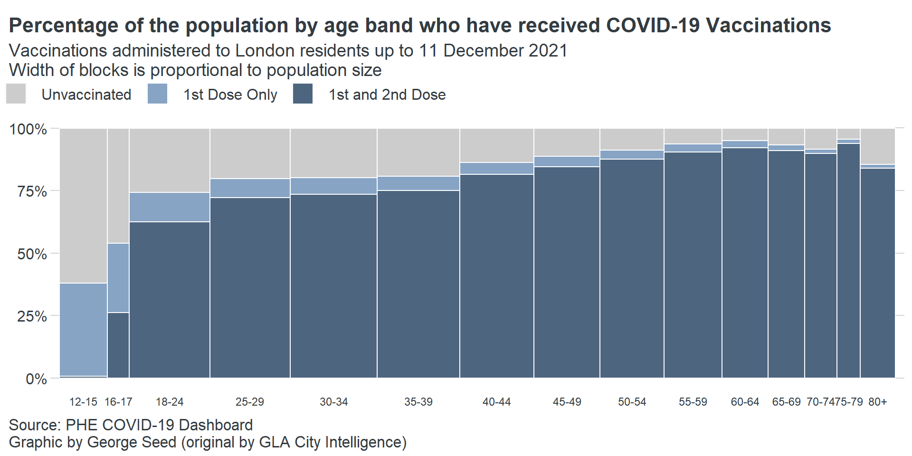

## Live Data
#vaccines = read.csv("https://data.london.gov.uk/download/coronavirus--covid-19--cases/ae4d5fc9-5448-49a6-810f-910f7cbc9fd2/phe_vaccines_age_london_boroughs.csv")
## Sample Data
vaccines <- read.csv("./data/vaccines_london.csv")Descripe Data
glimpse(vaccines)## Rows: 369,270
## Columns: 13
## $ X <int> 1, 2, 3, 4, 5, 6, 7, 8, 9, 10, 11, 12, 13, 14, 15, 16, 17, ~
## $ area_name <chr> "Barking and Dagenham", "Barking and Dagenham", "Barking an~
## $ area_code <chr> "E09000002", "E09000002", "E09000002", "E09000002", "E09000~
## $ date <chr> "2020-12-08", "2020-12-08", "2020-12-08", "2020-12-08", "20~
## $ dose <chr> "1st dose", "1st dose", "1st dose", "1st dose", "1st dose",~
## $ age_band <chr> "12 - 15 years", "16 - 17 years", "18 - 24 years", "25 - 29~
## $ age_higher <int> 15, 17, 24, 29, 34, 39, 44, 49, 54, 59, 64, 69, 74, 79, 90,~
## $ age_lower <int> 12, 16, 18, 25, 30, 35, 40, 45, 50, 55, 60, 65, 70, 75, 80,~
## $ cum_doses <int> 0, 0, 0, 0, 1, 0, 0, 0, 0, 0, 0, 0, 0, 0, 0, 0, 0, 0, 0, 0,~
## $ new_doses <int> 0, 0, 0, 0, 1, 0, 0, 0, 0, 0, 0, 0, 0, 0, 0, 0, 0, 0, 0, 0,~
## $ population <int> 13415, 5541, 17719, 15880, 17683, 17445, 15380, 14293, 1273~
## $ new_prop <dbl> 0.00000000000, 0.00000000000, 0.00000000000, 0.00000000000,~
## $ cum_prop <dbl> 0.00000000000, 0.00000000000, 0.00000000000, 0.00000000000,~head(vaccines)summary(vaccines)## X area_name area_code date
## Min. : 1 Length:369270 Length:369270 Length:369270
## 1st Qu.: 92318 Class :character Class :character Class :character
## Median :184636 Mode :character Mode :character Mode :character
## Mean :184636
## 3rd Qu.:276953
## Max. :369270
## dose age_band age_higher age_lower
## Length:369270 Length:369270 Min. :15.00 Min. :12.00
## Class :character Class :character 1st Qu.:29.00 1st Qu.:25.00
## Mode :character Mode :character Median :49.00 Median :45.00
## Mean :49.33 Mean :45.07
## 3rd Qu.:69.00 3rd Qu.:65.00
## Max. :90.00 Max. :80.00
## cum_doses new_doses population new_prop
## Min. : 0 Min. : 0.00 Min. : 2833 Min. :0.000000
## 1st Qu.: 2 1st Qu.: 0.00 1st Qu.: 9325 1st Qu.:0.000000
## Median : 996 Median : 2.00 Median :15318 Median :0.000165
## Mean : 4914 Mean : 26.99 Mean :15806 Mean :0.001749
## 3rd Qu.: 8952 3rd Qu.: 19.00 3rd Qu.:21241 3rd Qu.:0.001097
## Max. :38071 Max. :2196.00 Max. :41109 Max. :0.299970
## cum_prop
## Min. :0.0000000
## 1st Qu.:0.0001653
## Median :0.0621244
## Mean :0.3266756
## 3rd Qu.:0.7627050
## Max. :1.0917643Buatkan Visualisasi dalam bentuk grafik, yang memuat:
Filter Data
vaxdat1 = vaccines %>%
filter(date == "2021-12-11") %>%
group_by(age_band,dose)
head(vaxdat1)Menjumlahkan Populasi dan Membuat Kolom Presentasi Dosis dibangdingkan Populasi
vaxdat2 = vaxdat1 %>%
summarise(
totalpop = sum(population),
prop_doses = round(100*(sum(cum_doses)/sum(population)),digits = 1))
head(vaxdat2)Transpose Data (Wide)
vaxdat3 = vaxdat2 %>%
pivot_wider(
id_cols = c(age_band,totalpop),
names_from = dose,
values_from = c("prop_doses")) %>% clean_names()
head(vaxdat3)Menghitung Persentasi yang Belum Vaksin
vaxdat4 = vaxdat3 %>%
mutate(
x1st_dose = x1st_dose - x2nd_dose,
unvaxed = 100-(x1st_dose + x2nd_dose)) %>%
rename(
Unvaccinated = unvaxed,
"1st Dose Only" = x1st_dose,
"1st and 2nd Dose" = x2nd_dose)
head(vaxdat4)Transpose Data (Long)
vaxdat5 = vaxdat4 %>%
pivot_longer(!c(age_band,totalpop)) %>%
mutate(
name = factor(name, levels=c("Unvaccinated","1st Dose Only","1st and 2nd Dose")),
age_band = gsub(age_band,pattern = " |years",replacement = ""))
vaxdat5Menghilankan NA (vaksin ketiga)
vaxdat <- vaxdat5 %>%
filter(!is.na(name))
head(vaxdat)vaxdat <- vaccines %>%
group_by(age_band,dose) %>%
filter(date == "2021-12-11") %>%
summarise(
totalpop = sum(population),
prop_doses = round(100*(sum(cum_doses)/sum(population)),digits = 1)) %>%
pivot_wider(id_cols = c(age_band,totalpop),names_from = dose,values_from = c("prop_doses")) %>%
clean_names() %>%
mutate(
x1st_dose = x1st_dose - x2nd_dose,
unvaxed = 100-(x1st_dose + x2nd_dose)) %>%
rename(Unvaccinated = unvaxed, "1st dose" = x1st_dose, "2nd dose" = x2nd_dose) %>%
pivot_longer(!c(age_band,totalpop)) %>%
mutate(
name = factor(name, levels=c("Unvaccinated","1st dose","2nd dose")),
age_band = gsub(age_band,pattern = " |years",replacement = "")) %>%
filter(!is.na(name))head(vaxdat)Tampilan Bar Plot Sederhana.
plot_clean = ggplot(
data = vaxdat,
aes(x=age_band, y= value, fill=name, width=totalpop)
) +
geom_bar(position="stack", stat="identity",col="white") +
facet_grid(~age_band,scales = "free_x", space = 'free')
plot_cleanMelihat kode di atas, perhatikan panggilan awal ke ggplot() yang memetakan kolom dari vaxdat ke berbagai estetika yang ingin kita tampilkan.
Di sini kita akan memetakan:
Untuk ini kami menambahkan geom_bar() yang memahami bagaimana menafsirkan estetika x, y, fill dan lebar sesuai keinginan kita.
Untuk menghemat ruang, pilih grafik batang yang ditumpuk, tinggi setiap batang harus berhubungan dengan nilai sumbu y yang telah kami berikan (stat = ‘identity’), dan bahwa warna batas setiap batang harus putih.
Terakhir, kami membagi plot berdasarkan kelompok usia dan mengizinkan skala sumbu x selebar yang diperlukan dengan parameter skala.
plot_facets = plot_clean +
theme(panel.spacing = unit(0, "lines")) +
theme(strip.background = element_blank(),strip.text.x = element_blank()) +
theme(panel.background = element_blank())
plot_facetsPenyesuaian format facet:
plot_axes = plot_facets +
theme(axis.ticks.length.y.left = unit(1.25, "cm")) +
theme(axis.ticks.length.y.right = unit(1.25, "cm")) +
scale_y_continuous(labels=scales::percent_format(scale = 1), sec.axis = dup_axis(name=NULL,labels = NULL)) +
theme(plot.margin = margin(t = 1.3,r = 0.2,b = 0.25,l = 0.25,unit = "cm")) +
theme(axis.ticks = element_line(color = "#D4D4D4",size=0.5)) +
theme(axis.text.y = element_text(size=12,color= "#343C41")) +
theme(axis.ticks.x = element_blank()) +
theme(axis.text.x = element_text(size=9,color= "#343C41"))
plot_axesplot_legends = plot_axes +
theme(axis.title.x = element_blank(), axis.title.y = element_blank()) +
theme(legend.title = element_blank()) +
theme(legend.direction = "horizontal",legend.spacing.x = unit(0.4, 'cm'),legend.key.size = unit(0.62, "cm"),legend.position = c(0.19,1.08),legend.text = element_text(size=12,color="#343C41")) +
scale_fill_manual(values = c("#CCCCCC","#87A4C4","#4D657F"))
plot_legendsplot_text = plot_legends +
labs(title = "Percentage of the population by age band who have received COVID-19 Vaccinations", subtitle = "Vaccinations administered to London residents up to 27 October 2021\nWidth of blocks is proportional to population size",caption = "Source: PHE COVID-19 Dashboard\nGraphic by George Seed (original by GLA City Intelligence)") +
theme(plot.title = element_text(color = "#343C41", face="bold",size=18,vjust = 8), plot.subtitle = element_text(color = "#343C41",size=14,vjust = 10)) +
theme(plot.title.position = "plot") +
theme(plot.caption.position = "plot", plot.caption = element_text(hjust = 0,size=12.5,color = "#343C41",vjust=0))
plot_textplot = ggplot(data = vaxdat,aes(x=age_band,y=value,
fill=name,
width=totalpop)) +
geom_bar(position="stack",
stat="identity",
col="white") +
facet_grid(~age_band,scales = "free_x",
space = 'free') +
theme(panel.spacing = unit(0, "lines")) +
theme(strip.background = element_blank(),
strip.text.x = element_blank()) +
theme(legend.title = element_blank()) +
theme(panel.background = element_blank()) +
theme(axis.ticks.length.y.left = unit(0.25, "cm")) +
theme(axis.ticks.length.y.right = unit(0.25, "cm")) +
scale_y_continuous(labels=scales::percent_format(scale = 1),
sec.axis = dup_axis(name=NULL,labels = NULL)) +
theme(axis.title.x = element_blank(),
axis.title.y = element_blank()) +
theme(legend.direction = "horizontal",
legend.spacing.x = unit(0.4, 'cm'),
legend.key.size = unit(0.62, "cm"),
legend.position = c(0.19,1.08),
legend.text = element_text(size=12,color="#343C41")) +
theme(plot.margin = margin(t = 1.3,r = 0.2,b = 0.25,l = 0.25,
unit = "cm")) +
labs(title = "Percentage of the population by age band who have received COVID-19 Vaccinations",
subtitle = "Vaccinations administered to London residents up to 11 December 2021\nWidth of blocks is proportional to population size",
caption = "Source: PHE COVID-19 Dashboard\nGraphic by George Seed (original by GLA City Intelligence)") +
theme(plot.title = element_text(color = "#343C41", face="bold",
size=16,vjust = 8),
plot.subtitle = element_text(color = "#343C41",
size=14,vjust = 10)) +
theme(axis.ticks = element_line(color = "#D4D4D4",size=0.5)) +
theme(axis.text.y = element_text(size=12,color= "#343C41")) +
theme(plot.title.position = "plot") +
theme(plot.caption.position = "plot", plot.caption = element_text(hjust = 0,size=12.5,color = "#343C41",vjust=0)) +
theme(axis.ticks.x = element_blank()) +
theme(axis.text.x = element_text(size=9,color= "#343C41")) +
scale_fill_manual(values = c("#CCCCCC","#87A4C4","#4D657F"))
plot